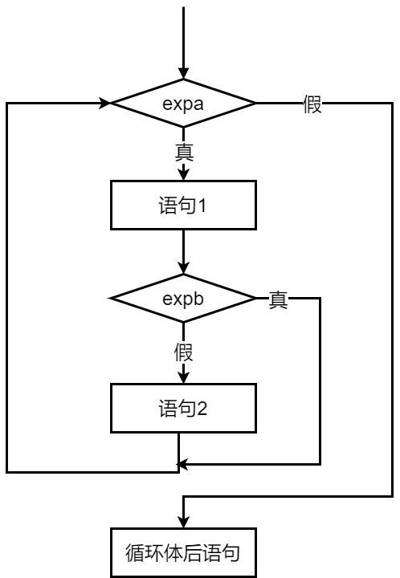

程序设计基础 · 第4次课 · 第二次课 · 第2课时
从最高分、Fibonacci到区间素数，训练循环程序的模型识别能力
看到一个循环问题，先判断它属于哪一种“重复模式”。
保留“到目前为止最好的结果”。
新状态由旧状态产生。
对一批候选对象逐个判断。
输入一批学生的成绩，找出最高分。
（注：当输入负数时标志数据输入结束）
max 比较scanf("%d", &mark);
max = mark; /* 假设第一个成绩是最高分 */
while (mark >= 0) {
if (mark > max)
max = mark;
scanf("%d", &mark);
}max 有一个合理初值，再不断用新数据挑战它。
max：它什么时候变化？| 输入成绩 | 比较前 max | 是否更新 | 比较后 max |
|---|---|---|---|
| 82 | - | 初始化 | 82 |
| 76 | 82 | 否 | 82 |
| 91 | 82 | 是 | 91 |
| 88 | 91 | 否 | 91 |
| -1 | 91 | 结束标志 | 91 |
💡 课堂互动：向 AI 提问“初值设为 INT_MIN 或第一个输入数据”的严密逻辑。
max = 0;
while (...) {
...
}如果数据范围不是0以上，就可能出错。
scanf("%d", &mark);
max = mark;用第一个有效数据初始化最大值。
初值不是形式问题，而是算法正确性的起点。
输入正整数 \(n\) (\(1 \le n \le 46\))，输出斐波那契（Fibonacci）数列的前 \(n\)
项：\(1, 1, 2, 3, 5, 8, 13, \ldots\)，每行输出 5 个。
（注：Fibonacci 数列满足任一项数字是前两项的和，最开始的两项均定义为 1）
1, 1, 2, 3, 5, 8, 13, ...
x1 = 1, x2 = 1
x = x1 + x2
x1 = x2;x2 = x;
| 轮次 | x1 |
x2 |
x=x1+x2 |
更新后 |
|---|---|---|---|---|
| 开始 | 1 | 1 | 2 | x1=1, x2=2 |
| 下一轮 | 1 | 2 | 3 | x1=2, x2=3 |
| 再下一轮 | 2 | 3 | 5 | x1=3, x2=5 |
n 项x1 = 1;
x2 = 1;
printf("%10d%10d", x1, x2);
for (i = 3; i <= n; i++) {
x = x1 + x2;
printf("%10d", x);
x1 = x2;
x2 = x;
}先输出前两项，再循环产生后面的 n-2 项。
printf("%10d", x);
if (i % 5 == 0)
printf("\n");产生数列的下一项。
每输出5项后换行，便于阅读。
循环体中可以同时包含“计算”和“输出控制”。
💡 课堂互动：利用 AI 推演顺序列出变量临时覆盖，体会多状态同步平移的顺序要求。

输入 2 个正整数 \(m\) 和 \(n\) (\(1 \le m \le n \le 500\))，输出 \(m\) 到 \(n\)
之间的全部素数，每行输出 10 个。
（注：素数指的是只能被 1 和自身整除的正整数，1 不是素数，2 是素数）
k=m...nk 是否为素数候选数 k 从 m 到 n。
对当前 k 尝试寻找因子。
k 是否为素数flag = 1;
limit = sqrt(k) + 1;
for (i = 2; i <= limit; i++) {
if (k % i == 0) {
flag = 0;
break;
}
}
if (flag == 1)
printf("%d ", k);break 表示：只要找到一个因子，就不需要继续检查。
m 到 n 之间的全部素数count = 0;
for (k = m; k <= n; k++) {
flag = 1;
limit = sqrt(k) + 1;
for (i = 2; i <= limit; i++) {
if (k % i == 0) {
flag = 0;
break;
}
}
if (flag == 1) {
printf("%5d", k);
count++;
if (count % 10 == 0) printf("\n");
}
}1 不是素数，2 是素数。
每判断一个新的 k，都要重新设置 flag。
i <= limit 与 i < limit 要保持逻辑一致。
💡 课堂互动：向 AI 提问开方优化的数学原理，理解为什么超过 sqrt(i) 的因子必然成对出现。
| 模型 | 关键变量 | 典型例题 |
|---|---|---|
| 求最值 | max |
输入一批成绩找最高分 |
| 状态迭代 | x1, x2, x |
Fibonacci前n项 |
| 枚举筛选 | k, flag, count |
输出m和n之间所有素数 |
先识别模型，再选择循环结构。